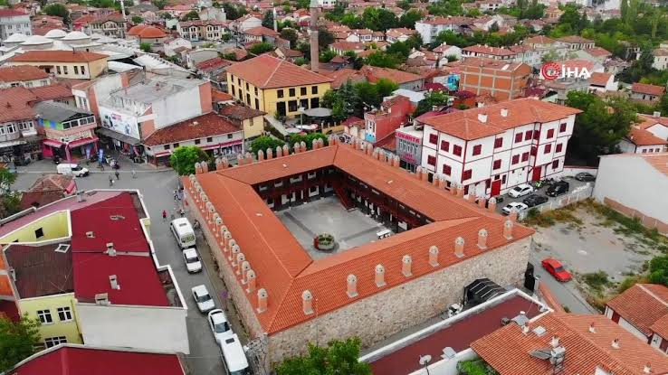

Tarih
Taşhan
Taşhan, geleneksel ticaret hayatını hatırlatan tarihî han yapılarından biridir. Hanlar geçmişte yolcuların konakladığı, tüccarların mallarını depoladığı ve alışveriş yaptığı önemli merkezlerdi. Avlulu mimarisi, ticaretin günlük yaşamla nasıl iç içe olduğunu düşündürür. Ziyaret ederken yapının avlu düzenine ve çevresindeki tarihî dokuya dikkat et.
Haritada aç →